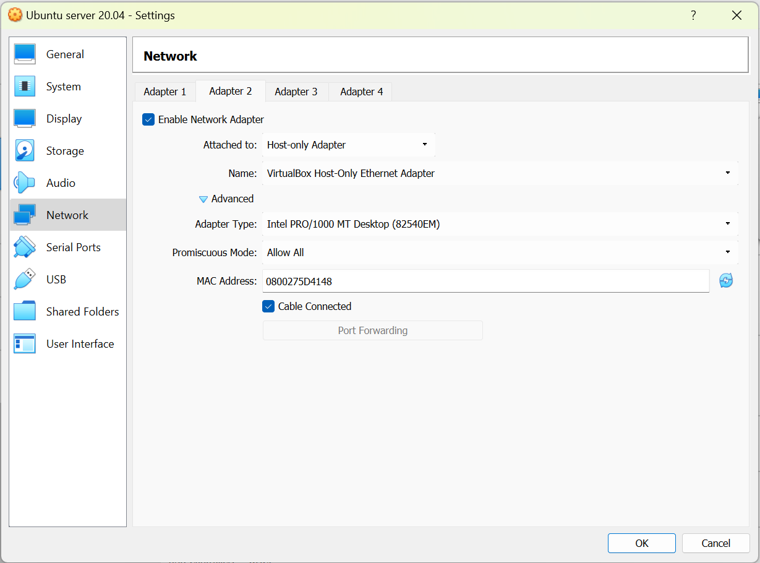
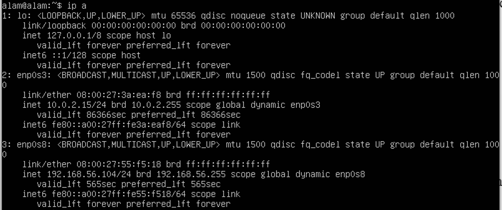

1 Ubuntu Server Installation
1.1 Practical Objectives
Students are able to install Ubuntu Server.
Students understand and are able to practice basic commands in the Ubuntu Server environment.
1.2 Theoretical Background of Ubuntu Server
Ubuntu Server is a Linux-based server operating system based on the Ubuntu distribution, developed by Canonical Ltd. Ubuntu Server is specifically designed for use in server environments and network infrastructure. Ubuntu Server is the version of the Ubuntu operating system without a graphical user interface (headless), with a primary focus on performance and efficiency for server-related tasks.
The following are some important points about Ubuntu Server:
Open Source: Ubuntu Server is open-source, meaning that its source code can be freely accessed, used, modified, and distributed by anyone. As a result, many communities and organizations can contribute to the development and improvement of the operating system.
Stability and Security: Ubuntu Server is supported by a large and active community and is reviewed by security experts. Stable versions are released regularly with Long-Term Support (LTS), providing security updates and bug fixes for an extended period, typically up to five years after release.
APT Package Management: Like other Linux operating systems, Ubuntu Server uses the Advanced Package Tool (APT) as its package management system. This allows administrators to easily install, remove, and manage software and additional packages required by the server system.
Command-Line Interface (CLI): Ubuntu Server operates through a CLI, allowing administrators to manage the system remotely or through Secure Shell (SSH). The absence of a graphical interface helps reduce resource usage and improve security.
Cloud Support: Ubuntu Server is well known for its support for cloud computing environments. This server version is widely used by cloud service providers such as Amazon Web Services (AWS), Google Cloud Platform (GCP), and Microsoft Azure.
Virtualization Support: Ubuntu Server supports virtualization technologies such as Kernel-based Virtual Machine (KVM) and Docker containers. This allows users to create and manage virtual machines and containers easily and efficiently.
Access to Ubuntu Repositories: Ubuntu Server provides access to extensive Ubuntu repositories for downloading and installing various server software, including web applications, databases, email servers, and many others.
Documentation and Community Support: Ubuntu has a large and active community that can provide assistance through forums, discussion groups, and other online resources. In addition, paid support options are available from Canonical Ltd. for business and enterprise users.
Ubuntu Server has become a popular choice for building and managing server infrastructure due to its stability, security, and support for modern technologies such as cloud computing and virtualization. It provides powerful tools for operating servers reliably and efficiently. The hands-on steps for installing and configuring it are covered in Section 1.3.
1.3 Ubuntu Server Practicum Steps
This guide walks through installing Ubuntu Server in VirtualBox and configuring its network adapter so the machine can be reached from outside VirtualBox.
1.3.1 Installing Ubuntu Server in VirtualBox
An internet connection is required during installation, since packages are fetched while Ubuntu Server sets itself up.
Download the Ubuntu Server installer image from ubuntu.com/download/server.
Choose the version that matches your computer’s specifications. Ubuntu Server 24 is the recommended version for this practicum.
Install Ubuntu Server through VirtualBox.
ImportantRecommended virtual machine specificationsSetting Recommended value Base Memory 8 GB Processors 2 Storage (VDI) 30 GB Use a different drive from the one hosting your host operating system to store the VM folder!
1.3.2 Configuring the Network Adapter for External Access
The default network adapter in VirtualBox is isolated from the outside world. Adding a second, host-only adapter lets you reach the Ubuntu Server VM from your host machine, configured as shown in Figure 1.1.

Power off the Ubuntu Server VM you just installed before changing its network settings.
Enable a host-only adapter.
In the VM’s Settings, open the Network menu and select the Adapter 2 tab. Then:
- Set Attached to: →
Host-only Adapter - Set Promiscuous Mode: →
Allow All
- Set Attached to: →
Power the VM back on and edit the Netplan configuration.
Create a configuration file with:
sudo nano /etc/netplan/01-netconf.yamlAdd the following content to the file:
network: version: 2 renderer: networkd ethernets: enp0s8: dhcp4: yesSave and exit the editor by pressing Ctrl+X, then Y, then Enter.
Apply the new network configuration.
In the Ubuntu Server terminal, run:
sudo netplan applyVerify the IP address.
Check that Ubuntu Server has received an IP address on the
enp0s8adapter. You can confirm this with:ip aNoteExample resultIn the example used for this guide, the Ubuntu Server IP address to be used in the next parts of the practicum is:
192.168.56.104
Figure 1.2 shows an example of this output in the Ubuntu Server terminal.

Figure 1.2: Ubuntu Server
The IP address obtained on the enp0s8 adapter (e.g. 192.168.56.104) will be used to access this Ubuntu Server instance in later steps of the practicum. Write it down before continuing.
1.3.3 Exercise
Try the commands listed in Table 1.1, explain their functions, and provide screenshots of your results. Complete a total of 15 commands.
| # | Command | # | Command | # | Command | # | Command |
|---|---|---|---|---|---|---|---|
| 1 | ls |
22 | ifconfig |
43 | lsof |
64 | parted |
| 2 | pwd |
23 | ip |
44 | dig |
65 | wc |
| 3 | cd |
24 | wget |
45 | nslookup |
66 | ls |
| 4 | clear |
25 | curl |
46 | du |
67 | nmap |
| 5 | mkdir |
26 | apt |
47 | tree |
68 | dmesg |
| 6 | mv |
27 | apt-get |
48 | ss |
69 | chattr |
| 7 | cp |
28 | yum |
49 | partx |
70 | usermod |
| 8 | rmdir |
29 | dnf |
50 | uptime |
71 | free |
| 9 | touch |
30 | rpm |
51 | tr |
72 | cron |
| 10 | cat |
31 | alias |
52 | ping |
73 | mysql |
| 11 | echo |
32 | dd |
53 | zcat |
74 | sdiff |
| 12 | less |
33 | top |
54 | xargs |
75 | history |
| 13 | tar |
34 | useradd |
55 | rm |
76 | netstat |
| 14 | grep |
35 | sleep |
56 | stat |
77 | sftp |
| 15 | head |
36 | screen |
57 | who |
78 | tcpdump |
| 16 | tail |
37 | pv |
58 | locate |
79 | scp |
| 17 | sort |
38 | fgrep |
59 | host |
80 | rsync |
| 18 | ps |
39 | dir |
60 | find |
81 | fsck |
| 19 | kill |
40 | egrep |
61 | fuser |
82 | bc |
| 20 | df |
41 | ssh |
62 | at |
83 | chage |
| 21 | chown |
42 | fd |
63 | fdisk |
84 | ffmpeg |